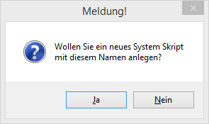
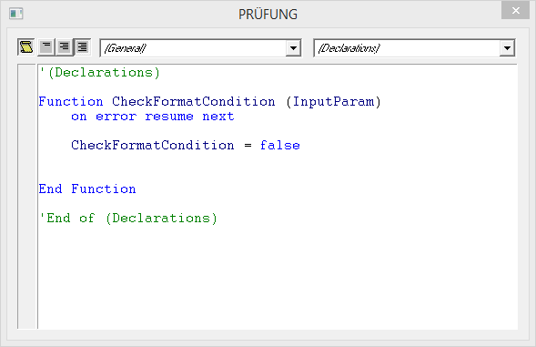
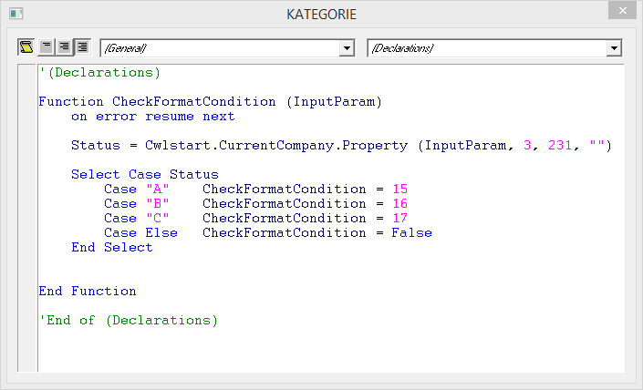
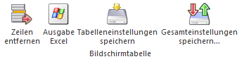

Im Bereich "Bedingungen" kann definiert werden, welche Daten geprüft werden sollen und wie das Ergebnis der Prüfung dann dargestellt werden soll. Grundsätzlich gibt es zwei Arten, woran eine Bedingung geknüpft werden kann:
ü Variable
Es kann direkt der
"Zustand" einer Variable gepürft werden und abhängig davon dann eine
Formatierung auslösen - z.B. die Variable 50/60 (Umsatz/Jahr), wo dann abhängig
vom Umsatz die Zahl dann rot, gelb oder grün eingefärbt wird.
ü Direktprüfung
Bei der
Direktprüfung können irgendwelche Werte / Texte abgefragt werden, wo dann
abhängig vom Ergebnis die bedingte Formatierung durchgeführt wird. Diese
Bedingung kann dann bei mehreren Objekten hinterlegt werden - z.B. eine
mengenabhängige Prüfung soll durchgeführt werden, die kann dann an verschiedenen
Punkten (Artikelmatchcode, Artikelbestandsliste etc.) eingesetzt werden.
Die Einstellungen im Detail:
Ø Icon
In der ersten Spalte wird ein Icon angezeigt. Das kann unterschiedliche Stati haben:
ü Damit wir ein ein normaler Eintrag symbolisiert, das kann wahlweise eine Variablendefintion oder eine Dirtekprüfung sein.
ü Damit wird eine Variablendefinition angezeigt, wo auch noch zusätzliche Variablen hinzugefügt sind, diese zusätzlichen Variablen werden aber nicht angezeigt (siehe auch Bereich " Angezeigte Variable "). Durch einen Doppelklick auf das Icon werden alle hinzugefügten Variablen auch entsprechend angezeigt.
ü Damit wird eine Variablendefinition angzeigt, wo auch noch zusätzliche Variablen hinzugefügt sind, diese zusätzlichen Variablen werden auch in eigenen Zeilen angzeigt (siehe auch Bereich " Angezeigte Variable ").
Ø Tabelle
Im ersten Schritt kann ausgewählt werden, ob eine Variable geprüft werden soll, oder ob eine Direktprüfung erfolgen soll. Wenn eine Variable geprüft werden soll, so kann aus der Auswahllistbox die Tabelle ausgewählt werden. Mit der Auswahl "000 - Manuelle Suche" wird das Fenster "Variable einfügen" geöffnet, in dem man nach bestimmten Tabellennamen und Variablen suchen kann. Mit einem Doppelklick auf einen gefundenen Eintrag wird dieser in die Tabelle übernommen, wobei dann u.U. auch gleich das Feld "Spalte" ausgefüllt wird (wenn statt einer Tabelle gleich eine Variable ausgewählt wird).
Bei der Auswahl der Variable ist darauf zu achten, dass auch tatsächlich die Variable verwendet wird, die im Formular oder in dem Bereich, wo die Prüfung wirken soll, auch zur Anwendung kommt.
Beispiel
Abhängig vom Kontonamen soll am Kontoblatt eine Information angedruckt werden. Das funktioniert nur dann, wenn hier die Variable 5/3 (Kontoname) verwendet wird, nicht aber z.B. mit der Variable 50/3 (Personenkontenname). Sinnvollerweise sollten in dem Zusammenhang zuerst die Formulare geprüft werden, welche Variablen da verwendet werden.
Ø Spalte / Bezeichnung
Wenn eine Tabelle ausgewählt wurde, kann aus der Auswahllistbox die Variable gewählt werden, die geprüft werden soll. Wurde in "Tabelle" die Option "999 - Direktprüfung" gewählt, kann eine Bezeichnung eingegeben werden, wie die Prüfung benannt werden soll.
Hinweis
Direktprüfungen mit gleichen Namen sind zulässig und werden zu einer Prüfung mit mehreren Optionen zusammengefasst.
Ø Priorität
Diese Spalte, die optional über die rechte Maustaste / Spalten anzeigen/verstecken aktiviert werden kann, kann die "Wichtigkeit" der Bedingung hinterlegt werden, wobei im Wesentlichen die Tabelle nach der Priorität sortiert und abgearbeitet wird. Der kleinste Wert hat die höchste Priorität, wobei die Prioritäten nur innerhalb gleicher Definitionen Berücksichtigung finden.
Ø Vergleich
Aus der Auswahllistbox kann der Vergleichs-Operator ausgewählt werden, dabei stehen folgende Optionen zur Verfügung:
ü < kleiner
ü <= kleiner gleich
ü = gleich
ü <> ungleich
ü > größer
ü >= größer gleich
ü >< von/bis
ü enthält
ü enthält nicht
ü System Skript
Abhängig davon, welche Option ausgewählt wurde, können auch die nachfolgenden Felder bearbeitet werden (oder auch nicht).
Ø Vergleichswert 1
Im Vergleichswert 1 kann bei jeder Option der gewünschte Wert eingegeben werden. Wenn die Option "System Skript" gewählt wurde, kann in diesem Feld ein Makro eingetragen werden, das zur Prüfung ausgeführt werden soll. Durch Drücken der F9-Taste kann nach allen bereits angelegten System Skripts gesucht werden. Wird hier ein Skriptname eingetragen, der noch nicht existiert, dann wird folgende Meldung ausgegeben:

Wird die Meldung mit NEIN bestätigt, bleibt man im Eingabefeld und man kann einen anderen Wert eintragen. Wird die Meldung mit JA bestätigt, öffnet sich das Makrofenster mit folgendem Inhalt:

Für die Verwendung des Skripts muss die Funktion "CheckFormatCondition" verwendet werden, das Ergebnis ist entweder "CheckFromatCondition = true", "CheckFormatCondition = false", oder "CheckFormatCondition = Formatierung". Wenn das Skript "CheckFormatCondition = True" zurück gibt (egal, wie das Ergebnis ermittelt wurde), dann wird die in der Zeile hinterlegte Formatierung dann angewendet. Wenn das Skript "CheckFormatCondition = Formatierung" zurückgibt, dann wird die entsprechende Formatierungszeile angewendet. Für die Funktion gibt es auch den Parameter "InputParam", dieser enthält immer den Key des aktuell im Zugriff befindlichen Datensatzes. Mit diesem InputParm können in weiterer Folge auch Abfragen auf die Datenbank durchgeführt werden.
Beispiel

In diesem Beispiel wir die Eigenschaft "Kategorie" im Kundenstamm abgefragt, je nachdem, welcher Kategorie hinterlegt ist, wird eine andere Formatierung (15, 16 oder 17) verwendet. Wenn eine andere Kategorie hinterlegt ist, wird keine Formatierung angewendet.
Wurde das Skript einmal angelegt und gespeichert, so kann es über die Rechte Maustaste / Eintrag Bearbeiten (SKRIPTONAME) bearbeitet werden. Die so angelegten / erstellen Skripts können auch im WinLine START unter dem Menüpunkt…
1 Parameter
1 Programm Makros
… im Register "System Skripte" bearbeitet werden.
Ø Vergleichswert 2
Wenn als Vergleich die Option ">< von/bis" gewählt wurde, kann hier dann der bis-Wert eingetragen werden.
Ø Formatierung
Aus der Auswahllistbox kann die Formatierung gewählt werden, die beim Eintreffen der Bedingung angewendet werden soll. Diese Einstellungen werden im Bereich "Formatierungen" definiert.
Ø Angezeigte Variable
Wenn eine Prüfung auf Basis einer Variable durchgeführt wird, dann in dieser Spalte zusätzliche Variablen angegeben werden, auf die die hinterlegte Formatierung eine Auswirkung haben soll. Durch Drücken der "EINFG"-Taste wird eine neue Zeile eingefügt (alle Spalten bis auf die Spalte "angezeigte Variable" sind nicht bearbeitbar), wo dann entweder direkt eine Variable in der Syntax Tabelle/Spalte hinterlegt werden kann.
Bei einer Direktprüfung hat die "EINFG"-Taste keine Funktion.
Tabellenbuttons (nur bei Belegmitte als Tabelle)

Ø Zeilen entfernen
Durch Anwahl dieser Buttons können einzelne Zeilen gelöscht werden.
Ø Ausgabe Excel
Durch Anwahl des Buttons "Ausgabe Excel" wird der Inhalt der Tabelle an Microsoft Excel übergeben.
Ø Tabelleneinstellungen speichern
Die Spalten einer Tabelle können grundsätzlich an beliebige Positionen verschoben, bzw. in der Breite entsprechend angepasst werden. Durch Anwahl des Buttons "Tabelleneinstellungen speichern" werden die Einstellungen benutzerspezifisch gespeichert und bei dem nächsten Aufruf des Programmpunktes wieder vorgeschlagen.
Ø Gesamteinstellungen speichern
Im Gegensatz zu "Tabelleneinstellungen speichern" können mit "Gesamteinstellungen speichern" mehrere Tabellenaufbauten gespeichert und nach Wunsch geladen werden. Zusätzlich werden Sonderfunktionen der Tabelle (z.B. "Spalte gruppieren") ebenfalls bei der Speicherung bedacht.